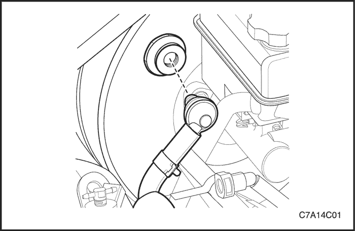
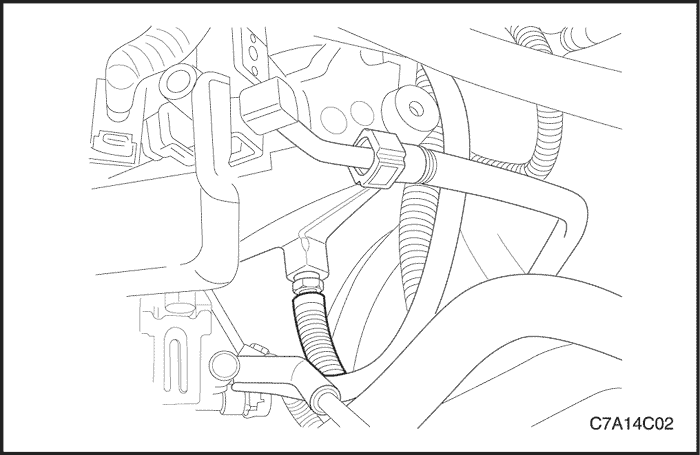
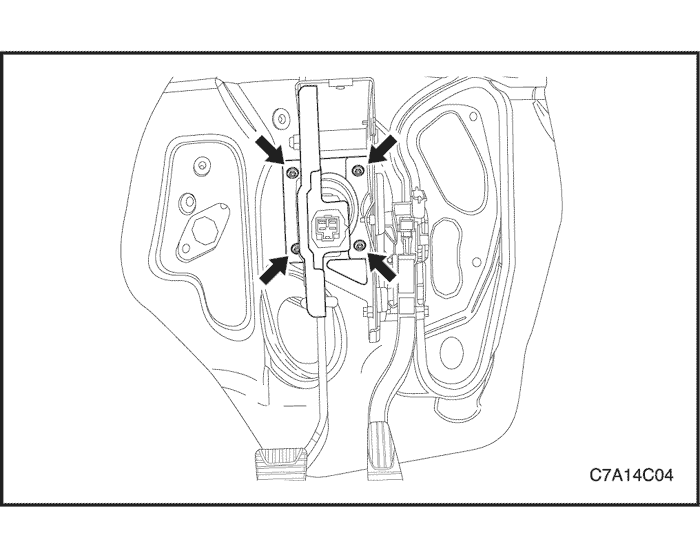

SECCIÓN 4C
SERVOFRENO
ESPECIFICACIONES
Especificaciones de apriete de la sujeción
| Aplicación | N•m | Árbol de transmisión izquierdo | Articulación |
| Tuercas que unen el servofreno al panel del salpicadero | 22 | 16 | - |
DIAGNÓSTICO
Comprobación del servofreno
- Con el motor apagado, elimine el vacío en el servofreno pisando el pedal de freno varias veces.
- Pise el pedal a fondo y manténgalo en esta posición.
- Ponga el motor en marcha.
- El servofreno funciona bien si el pedal baja aún más, debido a la fuerza adicional que se produce.
Si el pedal de freno no baja, es probable que haya una avería en el sistema de vacío (manguitos de vacío, válvula de retención, etc.) y debe comprobarse el sistema.
Si no se descubre ningún defecto en la comprobación del sistema, el defecto se encuentra en el propio servofreno.
MANTENIMIENTO Y REPARACIÓN
servicio con vehículo en marcha



manguera de vacío
Procedimiento de desmontaje
- Retire los clips de la conexión del manguito de vacío al servofreno.
- Desmonte el manguito del servofreno.

- Quite el clip de la conexión del manguito de vacío en el colector de admisión.
- Retire el manguito de vacío.
procedimiento de montaje
- Monte el manguito de vacío y asegúrese de que las conexiones están apretadas en los dos lados.
- Coloque los clips del manguito de vacío.
- Compruebe el funcionamiento del servofreno. Consulte el apartado "Comprobación del servofreno" de esta sección.
Conjunto de sobrealimentador de potencia
Procedimiento de desmontaje
- Desmonte el cilindro maestro. Consulte la sección 4B, Cilindro maestro.
- Retire la abrazadera de la conexión del manguito de vacío al servofreno.
- Desmonte el manguito de vacío del servofreno. Consulte el apartado "Manguito de vacío" de esta sección.

- Desconecte la brida de fijación de la varilla de empuje del servofreno.

- Quite las tuercas de fijación de los espárragos que sobresalen del tablero y desmonte el servofreno.
procedimiento de montaje
- Monte el servofreno y las tuercas de fijación al tablero.
Apretar
Apriete las tuercas de fijación del servofreno al tablero hasta 22 N•m (16 lb-pie).
- Monte el cilindro maestro en el servofreno. Consulte la sección 4B, Cilindro maestro.
- Instale el nuevo manguito de vacío. Consulte el apartado "Manguito de vacío" de esta sección.
- Conecte la brida de fijación a la varilla de empuje del servofreno.
- Compruebe el funcionamiento del servofreno. Consulte el apartado "Comprobación del servofreno" de esta sección.
DESCRIPCIÓN GENERAL Y FUNCIONAMIENTO DEL SISTEMA
Sobrealimentador de potencia
Este servofreno es una unidad de suspensión de vacío de diafragma dual. En un modo de funcionamiento normal, con los frenos de servicio sin aplicar, el servofreno de suspensión de vacío actúa con el vacío existente a ambos lados de su diafragma. Cuando se aplican los frenos, la presión atmosférica actúa en uno de los lados de dicho diafragma para proporcionar la servoasistencia. Cuando se liberan los frenos, se corta la actuación de la presión atmosférica desde ese lado del diafragma. En ese momento, la fuente de vacío aspira el aire del servofreno a través de la válvula antirretorno de vacío.
Importante: Si se desmonta o se desconecta cualquier componente del sistema hidráulico, puede resultar necesario tener que purgar la totalidad o una parte del sistema de frenos. Consulte la Sección 4A, Frenos hidráulicos.